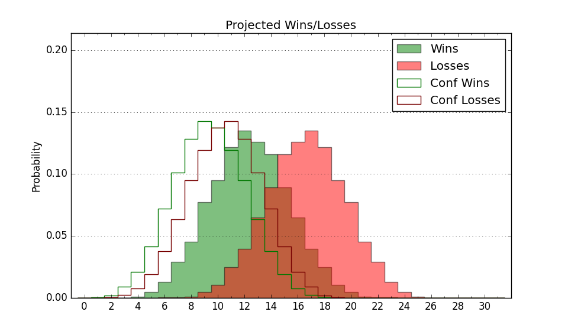

| Home | Game Probabilities | Conferences | Preseason Predictions | Odds Charts | NCAA Tournament |
| City: | Youngstown, Ohio | |
| Conference: | Horizon (1st)
| |
| Record: | 0-0 (Conf) 2-5 (Overall) | |
| Ratings: | Comp.: -9.2 (259th) Net: -12.1 (278th) Off: 89.9 (344th) Def: 102.0 (149th) SoR: 0.0 (246th) |
| Remaining | ||||||
|---|---|---|---|---|---|---|
| Date | Opponent | Win Prob | Pred. | |||
| 12/4 | @ Robert Morris (237) | 30.3% | L 65-71 | |||
| 12/7 | Oakland (239) | 60.3% | W 68-65 | |||
| 12/14 | Toledo (124) | 37.3% | L 75-79 | |||
| 12/18 | @ Wright St. (144) | 17.6% | L 69-80 | |||
| 12/21 | @ USC Upstate (348) | 58.5% | W 80-77 | |||
| 12/29 | Detroit (307) | 74.7% | W 71-63 | |||
| 1/1 | @ IUPUI (361) | 74.1% | W 75-68 | |||
| 1/4 | @ Fort Wayne (113) | 12.9% | L 67-81 | |||
| 1/8 | Northern Kentucky (211) | 53.8% | W 67-66 | |||
| 1/11 | Cleveland St. (320) | 76.8% | W 73-64 | |||
| 1/17 | @ Milwaukee (195) | 22.5% | L 69-78 | |||
| 1/19 | @ Green Bay (234) | 28.8% | L 72-78 | |||
| 1/22 | Robert Morris (237) | 59.7% | W 69-66 | |||
| 1/30 | Wright St. (144) | 42.2% | L 73-75 | |||
| 2/1 | IUPUI (361) | 90.7% | W 79-64 | |||
| 2/6 | @ Oakland (239) | 30.8% | L 63-69 | |||
| 2/8 | @ Detroit (307) | 46.4% | L 67-68 | |||
| 2/12 | Fort Wayne (113) | 33.6% | L 72-77 | |||
| 2/16 | @ Cleveland St. (320) | 49.3% | L 68-69 | |||
| 2/21 | Milwaukee (195) | 49.7% | L 73-74 | |||
| 2/23 | Green Bay (234) | 58.0% | W 76-74 | |||
| 3/1 | @ Northern Kentucky (211) | 25.5% | L 63-70 | |||
| Previous | Game Score | |||||
| Date | Opponent | Win Prob | Result | Off | Def | Net |
| 11/9 | @Chicago St. (360) | 72.7% | W 80-60 | 15.0 | 11.3 | 26.4 |
| 11/11 | @Ohio St. (17) | 1.7% | L 47-81 | -13.2 | 8.8 | -4.4 |
| 11/16 | @Syracuse (101) | 10.0% | L 95-104 | 14.2 | -3.7 | 10.4 |
| 11/21 | (N) Monmouth (317) | 62.9% | W 72-62 | -4.0 | 21.7 | 17.7 |
| 11/22 | (N) Presbyterian (245) | 47.2% | L 42-67 | -40.0 | 2.9 | -37.1 |
| 11/23 | @Stephen F. Austin (166) | 19.1% | L 57-64 | -0.9 | -0.1 | -1.0 |
| 11/27 | Western Michigan (273) | 67.8% | L 62-73 | -16.7 | -14.0 | -30.7 |
| Stats & Trends | |||||
|---|---|---|---|---|---|
| Current | Day | Week | Month | Season | |
| Composite | -9.2 | -0.1 | -3.6 | -3.8 | -3.8 |
| Comp Rank | 259 | -3 | -39 | -50 | -50 |
| Net Efficiency | -12.1 | -0.2 | -6.0 | -- | -- |
| Net Rank | 278 | +2 | -58 | -- | -- |
| Off Efficiency | 89.9 | -0.8 | -1.9 | -- | -- |
| Off Rank | 344 | -7 | -21 | -- | -- |
| Def Efficiency | 102.0 | +0.6 | -4.1 | -- | -- |
| Def Rank | 149 | +8 | -50 | -- | -- |
| SoS Rank | 231 | -3 | -65 | -- | -- |
| Exp. Wins | 12.4 | +0.0 | -2.3 | -2.7 | -2.7 |
| Exp. Conf Wins | 9.4 | +0.0 | -1.2 | -1.6 | -1.6 |
| Conf Champ Prob | 2.7 | +0.2 | -4.0 | -6.9 | -6.9 |

| Advanced Stats | ||
|---|---|---|
| Stat | Value | Rank |
| Off Eff FG % | 0.407 | 358 |
| Off Ast Ratio | 0.099 | 356 |
| Off ORB% | 0.275 | 194 |
| Off TO Rate | 0.145 | 152 |
| Off FT Ratio | 0.345 | 162 |
| Def Eff FG % | 0.500 | 166 |
| Def Ast Ratio | 0.146 | 190 |
| Def ORB% | 0.286 | 205 |
| Def TO Rate | 0.157 | 142 |
| Def FT Ratio | 0.416 | 298 |